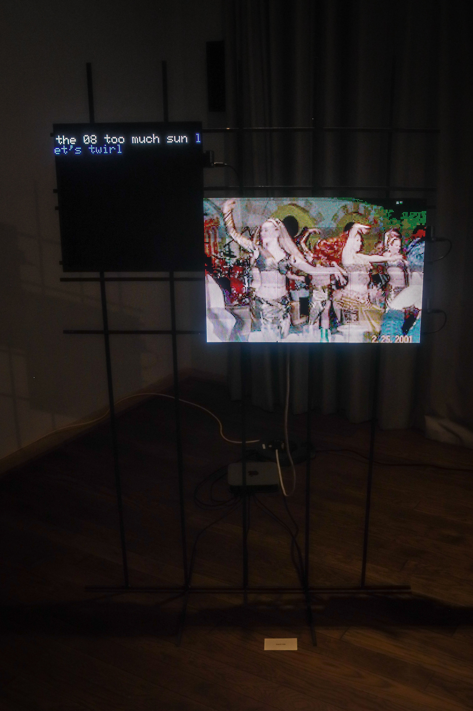
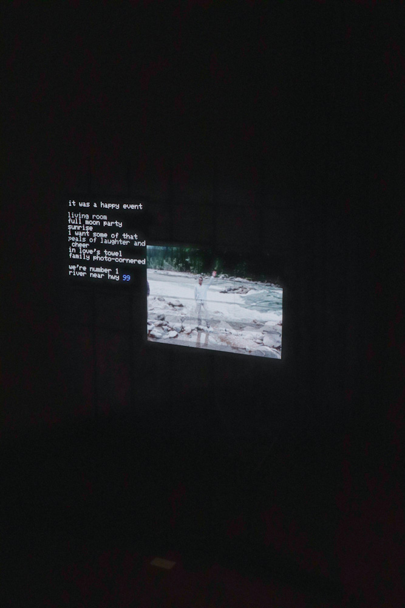

Memory 6.jpg What lies beneath - 2025
Led Panels, Steel

Finding moments of poetry from flickr titles
Created in collaboration with the Flickr Foundation, this project uses generative algorithms to weave poetry from the vast archive of Flickr image titles. Each poem emerges as the code seeks out hidden connections pairing and rearranging captions, letting the words of countless strangers reshape and reimagine new stories. In this evolving landscape, every poem becomes a reflection of digital memory and collective authorship, inviting us to rediscover the unseen poetry scattered across the web.
 